Part 1.1 — Forward Process
From left to right: original → noisy t=250 → t=500 → t=750.

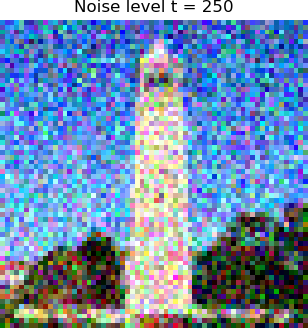
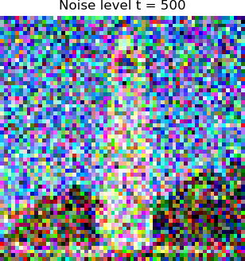
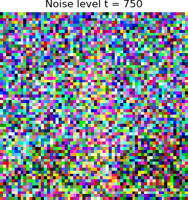
I generated embeddings for the following prompts:
a high quality picturean oil painting of a snowy mountain villagea photo of the amalfi coastUsing num_inference_steps = 10 and 20 with global seed 314159.
More denoising steps (20) create clearer textures and better global structure, while 10 steps appear softer and less detailed.
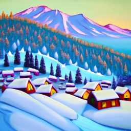
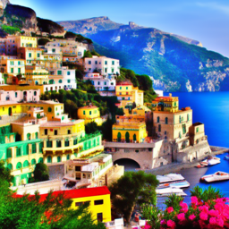
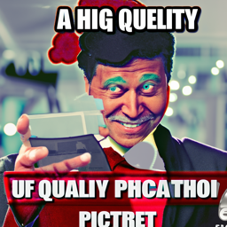
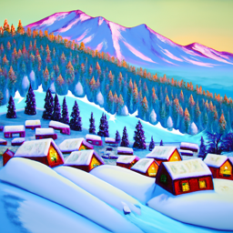
From left to right: original → noisy t=250 → t=500 → t=750.



Gaussian blur cannot reconstruct edges or architectural details from noise.
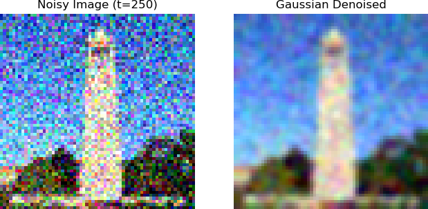
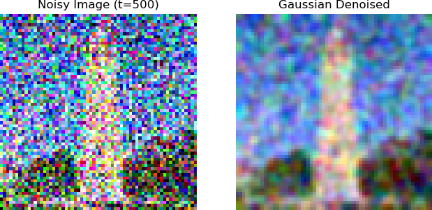
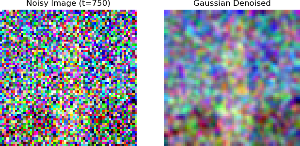
Each row: original → noisy → one-step denoised.
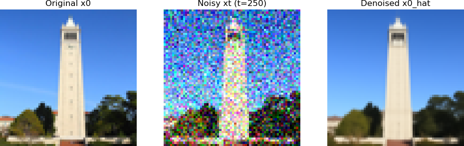
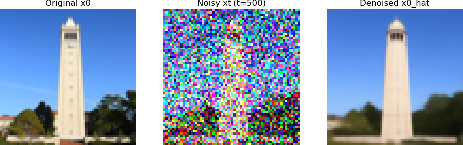
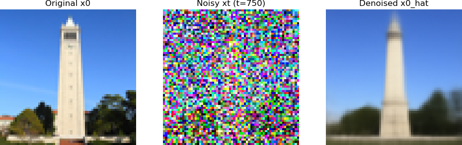
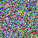
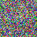
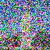
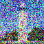
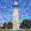
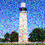
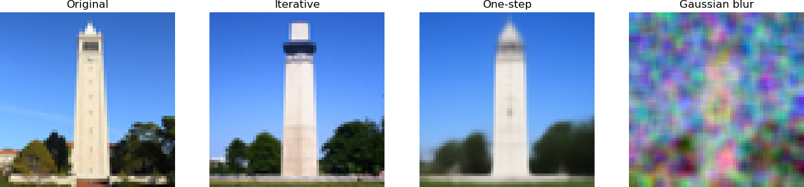
Five samples generated from pure noise.
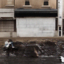
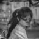
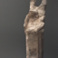
Five samples using CFG with scale = 7.
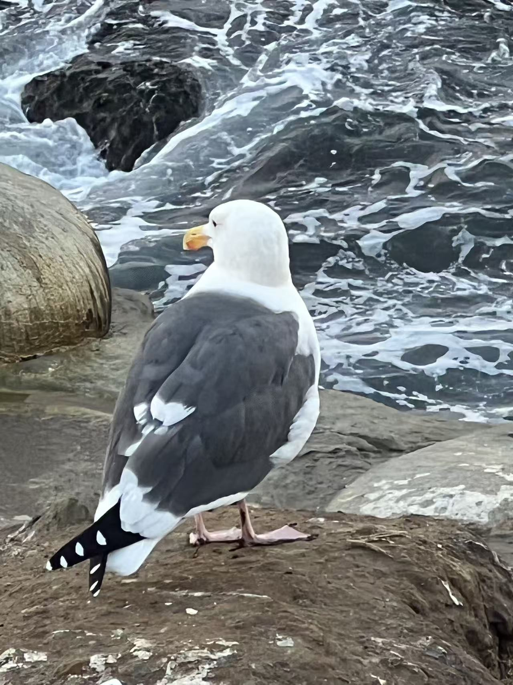
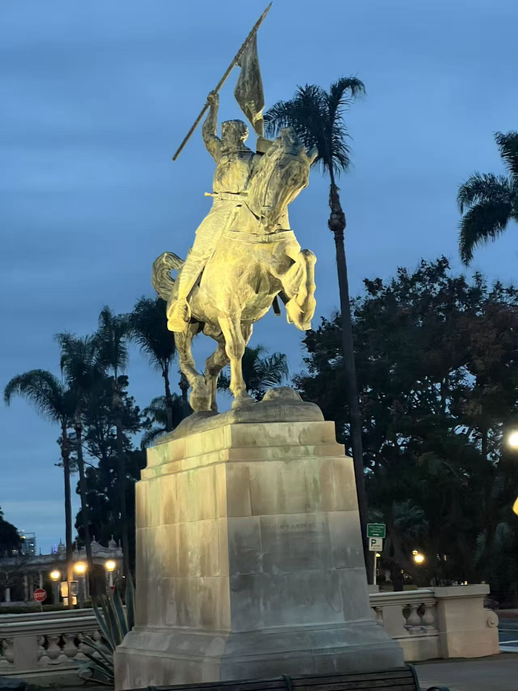
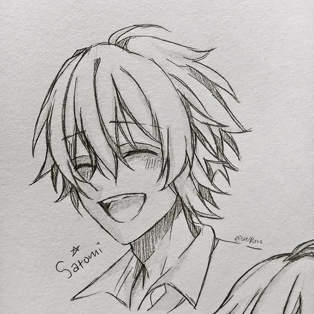
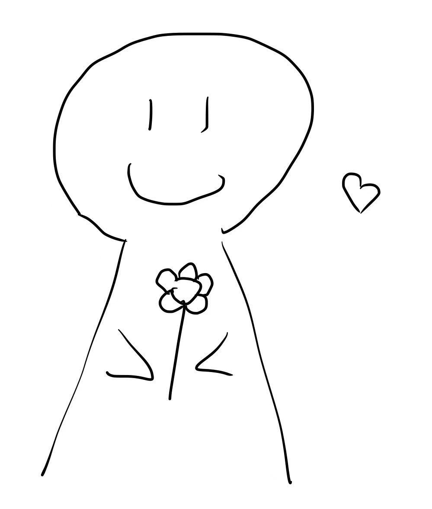
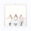
I implemented an inpainting function following the RePaint framework. The model denoises iteratively, but at every iteration I overwrite the unmasked region with the noisy version of the original image so the model only "hallucinates" inside the masked region.
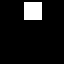
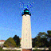
Here I apply SDEdit while conditioning on a descriptive text prompt. The results reflect both the original structure and the text prompt.
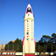
Using two prompts and flipping the latent during denoising, the model forms an image that changes its meaning when rotated 180°. Prompts used:
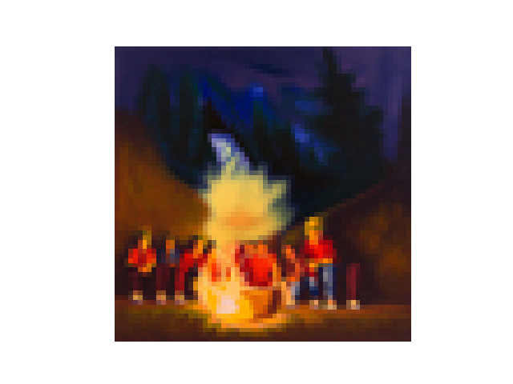
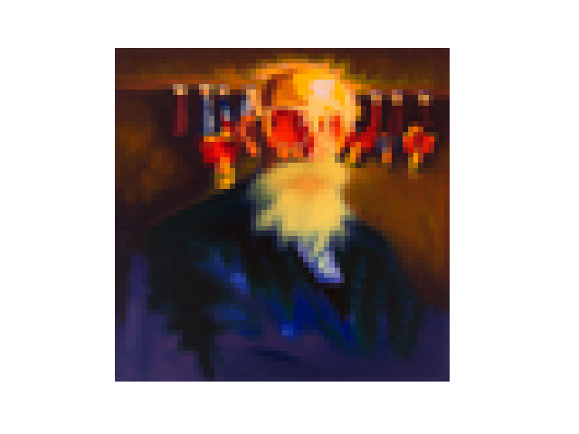
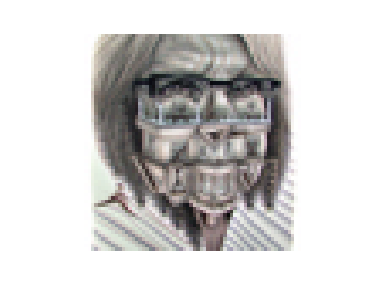
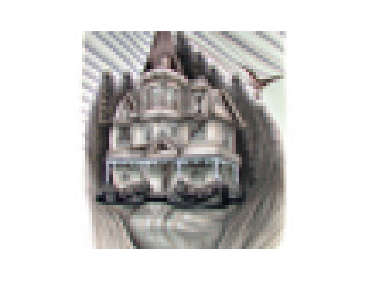
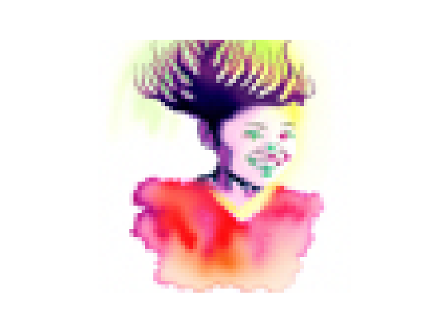
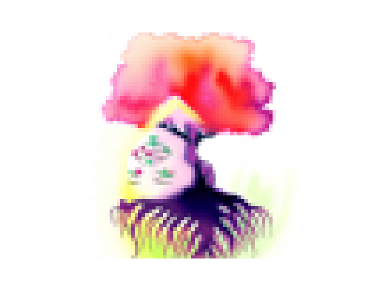
Hybrid images are produced by blending low-frequency components from prompt 1 with high-frequency components from prompt 2. Prompts used:
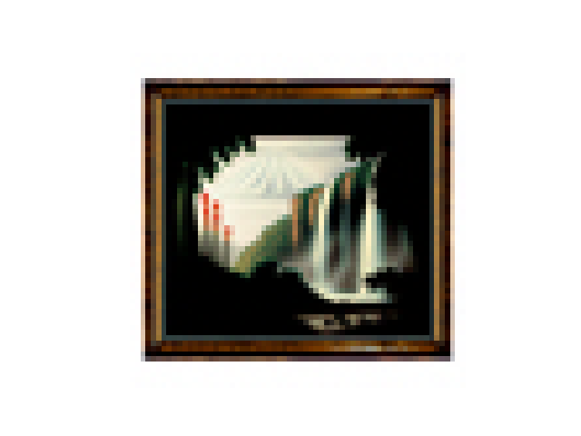
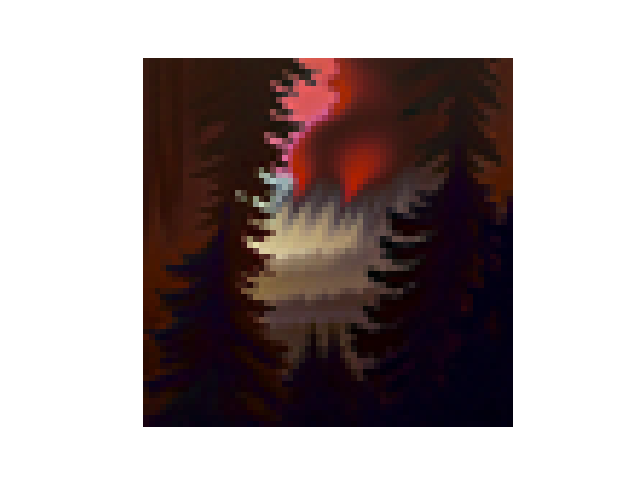
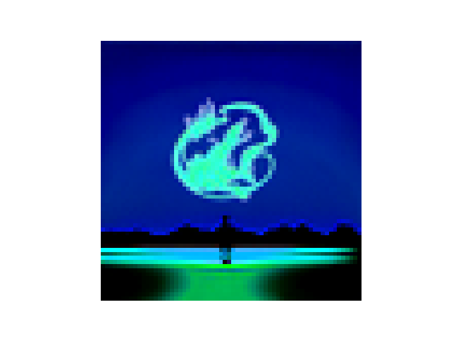